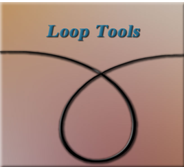
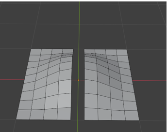

~1 Introduction to Loop Tools~
6/30/2025
What Tools are available in the Loop Tools?
How to Bring in an Object correctly

For the next couple of weeks, I will be presenting a set of tools, which can be found in Blender. These things are called Loop Tools, and they are an amazing addition to your arsenal of gadgets. This is something that you are most definitely going to want to add. Because they make a whole lot of procedures that you are going to want to do in Blender, a whole lot easier.
The Loop tools are only available in Edit mode, so you won’t even find them if you try to access them in any other workspace.
The thing about these Loop Tools, are that they are not automatically given to you. Oh, Blender has them, but you will need to turn them on first. This is similar to the way that your additional mesh items were added to Blender, which were explained in an earlier tutorial. So, we will need to be going into our Settings again.
How to Turn on Loop Tools
You will want to go to:
Edit-Preferences- Add-ons then just enable Loop Tools.
What Tools are available in the Loop Tools?
Once you are in Edit mode, you can right click on the object, and then you will see you have access to Loop Tools.
These are the Tools that are available:

How to Bring in an Object correctly
Before you can bring your object into the Edit work space, you want to make sure that you are doing things correctly. The problem is Blender needs to think that this object is just one entity, and the tools will not work if it does not look at your model in this way.
Sometimes you will only be working on one mesh object, then you can bring that object into the Edit mode work space just fine. Once it is in there you can separate that one object making it appear to be two, but doing this separation in edit mode, will still have Blender thinking that it is working with just one object.
The below image is displaying just one object; it is a plane that we brought into edit mode. Then we did a few things to it, and just cut it in half, while still in edit mode. So, Blender will still think of it as just one object. This way there is no need to do anything prior to bringing it in to the Edit mode work space.
Joining an Object
On the other hand, if you start off with two different objects in Object Mode, you will first need to join these two objects together, so the Blender see them as one object.
To join an object together, we select both objects and then hit the ctrl key with the J key on the key board. The image below is not yet joined because you will see that the top cylinder has a red selection outline around it, and the bottom cylinder has an orange one.
Now hit:
Ctrl-J
You will know they have been joined because both of the outlines will be orange.
Now you can bring this joined object into the Edit work space, and start working on it, using the Loop tools. This way working with Loop tools will be just fine.
Well, that is a short introduction to using these Loop tools. Next week we will start taking each of these different tool options into their own tutorial, and start breaking them down. This way you can become more familiar with using them for yourself.